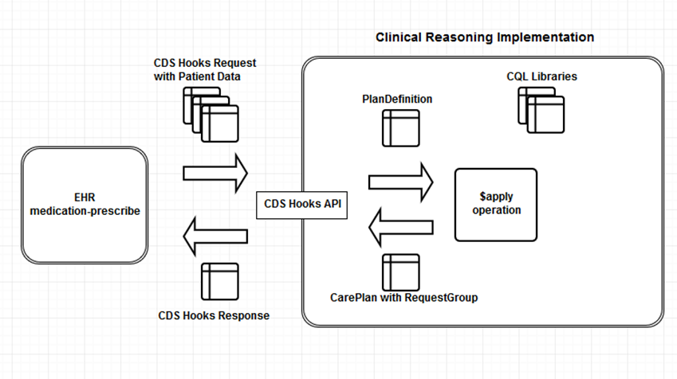

当前位置： 临床推理
当前位置： 临床推理- 临床决策支持
当前位置： 临床推理工作组: Clinical Decision Support  | 成熟度: 2 | 标准状态: Trial Use |
This section of the clinical reasoning module discusses the evaluation use case for clinical decision support and how the various knowledge artifacts can be integrated into clinical workflow. The topic focuses on two main scenarios:
Note that this topic is a very high-level approach to using CDS Hooks to support these two use cases. It is not a normative description of any of the CDS Hooks content. Please refer to the CDS Hooks specification itself for more details. At the time of this publication, the CDS Hooks specification has been balloted but is still in the process of being published. Because the links on this page deep-link the CDS Hooks specification, they are still referencing the original CDS Hooks specification. When it is published, the CDS Hooks specification will be located at http://cds-hooks.hl7.org .
CDS Hooks is an open source specification focused on user-facing remote clinical decision support. CDS Hooks can use FHIR to represent patient information and recommendations, but is architecturally an independent specification. The basic components of CDS Hooks are:
| Service | A decision support service that accepts requests containing patient information, and provides responses |
| Hook | A defined point within the client system's workflow with well-known contextual information provided as part of the request |
| EHR | An electronic health record, or other clinical information system that consumes decision support in the form of services |
| Card | Guidance from decision support services is returned in the form of cards, representing discrete recommendations or suggestions that are presented to the user within the EHR |
The first phase in consuming a CDS Service using CDS Hooks is to configure the integration from the EHR. The CDS Service publishes a set of endpoints to advertise available functionality using the discovery endpoint. For each endpoint, the service declares the hook during which it expects to be invoked, and optionally, any prefetch information that could be provided to the service.
Each hook identifies contextual information that is available within the EHR. For example, the medication-prescribe hook specifies the patient in context, as well as the medications being prescribed. When invoking the service from this hook, the EHR is expected to provide this contextual information as part of the request.
In addition, the CDS Service may specify additional information using prefetch templates. Each prefetch template is a FHIR query URL, parameterized by the data available in context, and describing information needed by the CDS Service to perform its processing. By providing this information as part of the request, the EHR alleviates the need for the CDS Service to request the additional information.
The following example illustrates a typical service discovery response:
{
"services": [
{
"hook": "medication-prescribe",
"prefetch": {
"medication": "MedicationOrder?patient\u003d{{context.patientId}}\u0026status\u003dactive"
},
"title": "Opioid Morphine Milligram Equivalence (MME) Guidance Service",
"description": "CDS Service that finds the MME of an opioid medication and provides guidance to the prescriber if the MME exceeds the recommended range.",
"id": "cdc-opioid-guidance"
},
{
"hook": "patient-view",
"prefetch": {
"patient": "Patient/{{context.patientId}}"
},
"title": "Zika Virus Intervention",
"description": "Identifies possible Zika exposure and offers suggestions for suggested actions for pregnant patients",
"id": "zika-virus-intervention"
},
}The second phase is the actual request/response call to the CDS Service. Once the integration has been configured using the above information, the EHR can make requests to decision support services at the appropriate times based on the hooks it supports. To make a request, the EHR prepares a request object containing the contextual information required for the hook, as well as any additional prefetch information.
For example, the following request illustrates a call to the cdc-opioid-guidance service:
{
"hookInstance": "d1577c69-dfbe-44ad-ba6d-3e05e953b2ea",
"fhirServer": "https://example.org/fhir",
"hook": "medication-prescribe",
"context":
{
"medications": [
{
"resourceType": "MedicationOrder",
"id": "medrx001",
... <FHIR Resource - snipped for brevity>
}
],
"patientId": "Patient/Patient-12214",
"userId": "Practitioner/example"
},
"patient": "Patient/Patient-12214",
"prefetch": {
"medication": {
"resource": {
"resourceType": "Bundle",
"entry": [
{
"fullUrl": "https://example.org/fhir/open/MedicationOrder/medrx002",
"resource": {
"resourceType": "MedicationOrder",
"id": "medrx002",
... <FHIR Resource - snipped for brevity>
}
]
}
}
}
}This request identifies:
medication-prescribe in this caseMedicationOrder being prescribed in this caseMedicationOrders for the patient in this caseThe service responds with a set of cards describing any recommendations or suggestions that should be presented to the user:
{
"cards":[
{
"summary":"High risk for opioid overdose - taper now",
"detail":"Total morphine milligram equivalent (MME) is 110 mg/d. Taper to less than 50.",
"indicator":"warning",
"source": {
"label": "Centers for Comprehensive Disease Control (CDC)",
"url": "http://cdc.gov"
},
"suggestions":[
{
"label": "Total morphine milligram equivalent (MME) is 110 mg/d. Taper to less than 50.",
"actions":[
{
"type": "update",
"description":"Total morphine milligram equivalent (MME) is 110 mg/d. Taper to less than 50.",
"resource": { ... <Updated FHIR Resource - snipped for brevity> ... }
}
]
}
],
"links":[
{
"label":"CDC guideline for prescribing opioids for chronic pain",
"type": "absolute",
"url":"https://www.cdc.gov/mmwr/volumes/65/rr/rr6501e1.htm"
},
{
"label":"MME Conversion Tables",
"type": "absolute",
"url":"https://www.cdc.gov/drugoverdose/pdf/calculating_total_daily_dose-a.pdf"
}
]
}
]
}Each card contains:
info, warning or hard-stopAt this point, the EHR processes the response and determines the most appropriate mechanism for displaying the results to the end-user. However, it is often the case that the results of the decision support interaction need to be persisted for future reference. The GuidanceResponse and RequestGroup resources provide a general mechanism that supports this use case.
In general, a CDS Hooks Response can be captured as a single GuidanceResponse that represents the overall response from the CDS Service, and a single RequestGroup containing the cards and suggestions, as illustrated by the following object-level mappings:
| CDS Hooks Object | FHIR Resource Mapping | Description |
|---|---|---|
| Response | GuidanceResponse and RequestGroup | A CDS Hooks Response is 1 to 1 with a GuidanceResponse and an associated RequestGroup |
| Card | RequestGroup.action | Each Card in the response is represented as a top level action in the RequestGroup. The selectionBehavior of the action (i.e. among suggestions on the card) is specified by the selectionBehavior element of the card. |
| Suggestion | RequestGroup.action.action | Each suggestion on a card is represented as a nested action within the action for the card. The selectionBehavior of the action (i.e. among the actions described in the suggestion) is all, because CDS Hooks specifies that when a suggestion is accepted, all the actions on the suggestion are performed. |
| Action | RequestGroup.action.action.action | Each CDS Hooks Action on a card is represented as a nested action within the RequestGroup action for the suggestion, and the resource in the CDS Hooks Action populates the resource element of the RequestGroup action. |
And the following table lists the element-level mappings:
| CDS Hooks Element | FHIR Resource Mapping |
|---|---|
| Request.hookInstance | GuidanceResponse.requestId & RequestGroup.identifier |
| Request URL | GuidanceResponse.moduleUri & RequestGroup.instantiatesUri |
| Response status | GuidanceResponse.status |
| Request Patient | GuidanceResponse.subject & RequestGroup.subject |
| Request time | GuidanceResponse.occurrenceDateTime & RequestGroup.authoredOn |
| Request service | GuidanceResponse.performer & RequestGroup.author (as a Device) |
| Response.card | RequestGroup.action |
| Response.card.summary | RequestGroup.action.title |
| Response.card.detail | RequestGroup.action.description |
| Response.card.indicator | RequestGroup.priority | RequestGroup.action.resource.priority, using the mapping specified here |
| Response.card.source | RequestGroup.action.relatedArtifact.where(type = 'documentation') |
| Response.card.selectionBehavior | RequestGroup.action.selectionBehavior |
| Response.card.suggestion | RequestGroup.action.action |
| Response.card.suggestion.label | RequestGroup.action.action.title |
| Response.card.suggestion.uuid | RequestGroup.action.action.id |
| Response.card.suggestion.action | RequestGroup.action.action.action |
| Response.card.suggestion.action.type | RequestGroup.action.action.action.type |
| Response.card.suggestion.action.description | RequestGroup.action.action.action.description |
| Response.card.suggestion.action.resource | RequestGroup.action.action.action.resource |
Note that these examples all assume a FHIR DSTU2 service is being used.
To support these scenarios, this module defines the CDS Hooks GuidanceResponse and CDS Hooks RequestGroup profiles.
In addition to supporting the user-facing remote decision support use case, CDS Hooks can be used to surface clinical decision support behavior represented by knowledge artifacts in the Clinical Reasoning module. In this use case, a FHIR server functioning as a knowledge provider exposes CDS Hooks Services using the discovery endpoint, and provides guidance using the CDS Service endpoint. To support this, several mappings from Clinical Reasoning functionality to CDS Hooks services are used:
A hook in CDS Hooks is a pre-defined point in the workflow of a clinical information system such as an EHR. Each hook defines context, which is the information available as part of the current activity in the system. Each hook represents a point in the workflow that can be augmented by decision support from an external system. Within CDS Hooks, each hook defines the set of available context values, along with whether or not that context value can be used as a prefetch token.
For example, the patient-view hook defines patientId and encounterId as context values and indicates that they are both available for use as prefetch tokens (meaning that they can be used to parameterize prefetch templates).
Within FHIR, the concept of a hook can be represented using a combination of TriggerDefinition and ParameterDefinition:
| CDS Hooks Element | FHIR Mapping |
|---|---|
| Hook.name | TriggerDefinition.where(type = 'named-event').name |
| Hook.context.field | ParameterDefinition.name |
| Hook.context.priority | ParameterDefinition.min & ParameterDefinition.max |
| Hook.context.description | ParameterDefinition.documentation & ParameterDefinition.type & ParameterDefinition.profile |
Note that using TriggerDefinition to represent hook information requires that hook details be duplicated everywhere they are used. Another approach would be to use the EventDefinition resource to capture the hook information once, and then reuse that by reference wherever it is needed.
A service in CDS Hooks is a clinical decision support service that can be used to provide guidance to users at pre-defined points in a workflow. The PlanDefinition resource can be used to describe the behavior of decision support functionality, which can then be exposed via a CDS Hooks service. In the simplest case, there is a one-to-one correspondence between a PlanDefinition and a CDS Service:
| CDS Hooks Element | FHIR Mapping |
|---|---|
| Service.id | PlanDefinition.url (without the base) |
| Service.title | PlanDefinition.title |
| Service.description | PlanDefinition.description |
| Service.hook | PlanDefinition.action.trigger |
| Service.prefetch | PlanDefinition.data-requirement |
To support this representation, this module defines a CDS Hooks Service PlanDefinition profile, which also supports specifying the CDS Hooks endpoint on which the PlanDefinition should be exposed.
The PlanDefinition/$apply operation can then be used to provide the behavior of the CDS Hooks service, as described in the Processing CDS Hooks Requests section below.
In addition to the contextual information defined by the hook, services in CDS Hooks can request that additional information be supplied with each request in the form of prefetch templates. These templates are parameterized FHIR query URLs that can be fulfilled by the EHR as part of the request, reducing the number of round-trips between the CDS Service and the EHR's FHIR server.
The concept of prefetch data is represented within Clinical Reasoning as a DataRequirement, which can be transformed to an instance level read or type level search interaction as follows:
| DataRequirement Element | Mapping to FHIR URL |
|---|---|
| type | [type]{[id] | ?[parameters]} |
| subject | subject={{patientId}} |
| codeFilter | [path]{=|:in}[code|valueSet] |
| dateFilter | [path]{eq|lt|gt|ge|le}[valueDateTime|valuePeriod|valueDuration] |
| sort | _sort=[sort] |
| limit | _limit=[limit] |
This prefetch data can be automatically determined from the data requirements of the PlanDefinition and provided as part of the service definition to the CDS Hooks discovery response.
Once the available PlanDefinition resources are advertised through the discovery endpoint, a CDS Hooks endpoint can be used to perform the actual evaluation, as illustrated in the following diagram:
As depicted in the above diagram, an EHR invokes a CDS Hooks request at the appropriate point in the workflow, providing the requested context and data. The CDS Service responds by performing an $apply operation against the specified PlanDefinition, and transforming the resulting RequestGroup into a CDS Hooks response.
Because PlanDefinitions can be used in a broad range of use cases, this module defines the CQL Library and Computable PlanDefinition profiles to describe the special case of a PlanDefinition being used as an event-condition-action rule with conditions and other dynamic behavior specified in a CQL Library. This arrangement provides a common and consistent pattern for describing decision support that can be easily integrated using the CDS Hooks specification.